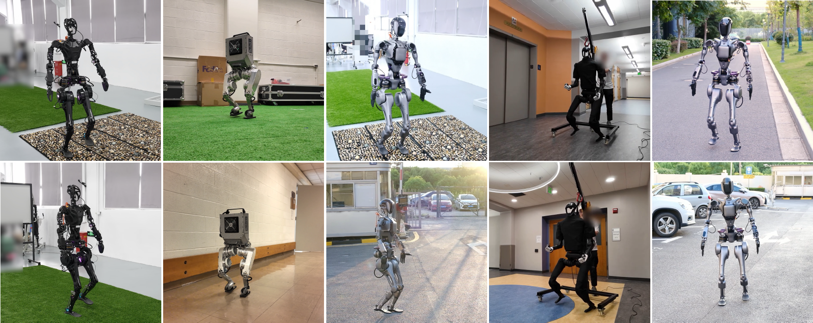

Zixuan Chen* (1)Xialin He* (2)Yen-Jen Wang* (3)Qiayuan Liao (3)Yanjie Ze (4)Zhongyu Li (3)S. Shankar Sastry (3)Jiajun Wu (4)Koushil Sreenath (3)Saurabh Gupta (2)Xue Bin Peng (1, 5)
(1) Simon Fraser University(2) UIUC 3UC Berkeley(4) Stanford University(5) NVIDIA
*Equal contribution.

Abstract
Reinforcement learning combined with sim-to-real transfer offers a general framework
for developing locomotion controllers for legged robots. To facilitate successful
deployment in the real world, smoothing techniques, such as low-pass filters and
smoothness rewards, are often employed to develop policies with smooth behaviors.
However, because these techniques are non-differentiable and usually require tedious
tuning of a large set of hyperparameters, they tend to require extensive manual
tuning for each robotic platform. To address this challenge and establish a general
technique for enforcing smooth behaviors, we propose a simple and effective method
that imposes a Lipschitz constraint on a learned policy, which we refer to as
Lipschitz-Constrained Policies (LCP). We show that the Lipschitz constraint can be
implemented in the form of a gradient penalty, which provides a differentiable
objective that can be easily incorporated with automatic differentiation frameworks.
We demonstrate that LCP effectively replaces the need for smoothing rewards or
low-pass filters and can be easily integrated into training frameworks for many
distinct humanoid robots. We extensively evaluate LCP in both simulation and
real-world humanoid robots, producing smooth and robust locomotion controllers.
@article{
chen2024lcp,
title = {Learning Smooth Humanoid Locomotion through Lipschitz-Constrained Policies},
author = {Zixuan Chen and Xialin He and Yen-Jen Wang and Qiayuan Liao and Yanjie Ze and Zhongyu Li and S. Shankar Sastry and Jiajun Wu and Koushil Sreenath and Saurabh Gupta and Xue Bin Peng},
journal = {arxiv preprint arXiv:2410.11825},
year = {2024}
}